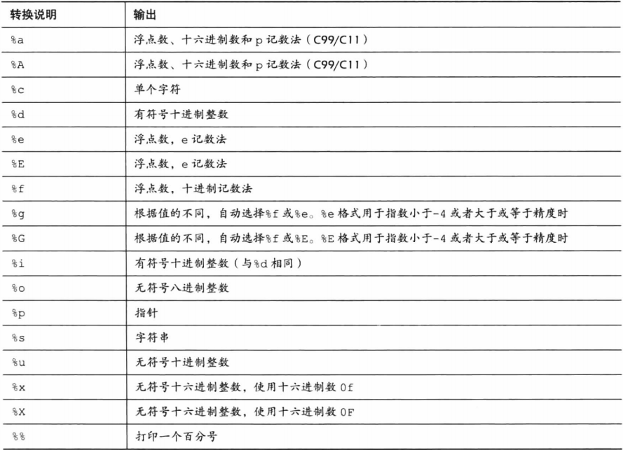

占位符
格式占位符(%)是在C/C++语言中格式输入函数，如scanf()、printf()等函数中使用。其意义就是起到格式占位的意思，表示在该位置有输入或者输出。
以下为C语言中各占位符介绍。

其最常见的用法即用在格式化输入输出函数中，即scanf()与printf()。
以printf()函数为例，其使用方式为int printf( const char *restrict format, ... );。其中：
const char *restrict format意为该处需填入一个仅能通过指针引用的格式化字符常量，对新人来说只需知道此处应填入一个“输出模板”即可，即最终的输出形式；
...为将要输入/输出至占位符位置的值，多个值之间以逗号,分隔。
补充：需注意的是，不仅输出函数会将输出按照format参数格式化，输入函数同样也会如此执行。换句话说，用户在输入时也必须严格按照format格式进行输入，否则将不能正常输入。具体参考下面使用示例。
使用示例
源码：
int a = 1;
printf("a=%d , " , 1);
printf("a=%d , a+1=%d" , a , a+1);输出结果：
a=1 , a=1 , a+1 = 2
源码：
int a;
scanf("a=%d",&a);错误输入示例：
1
如此输入将导致变量a无法被正确赋值；
正确输入示例
a=1
如此输入后a的值将置为1。
运算符、表达式、语句
基本运算符
包括赋值、算数、位、逻辑和逗号运算符等；
赋值运算符，即=，其作用为将右侧侧的值写入左侧，需注意的其左侧必须能被修改，不能为常量；
算数运算符，即+、-、*、/、%等，数量太多，此处暂不一一列举。此类运算符都具有数学意义，一般用于数值间的数学运算。因其意义多与数学公式中的运算符相同，此类运算符对一般来讲直接凭直觉使用即可，有需要的同学可以自行上网查询相关资料；
位运算符，即<<、>>、&、|、~、^，此运算符涉及位运算，新人一般不会用到。前两个作用是按照指示方向将当前数值的二进制码左移或右移一位，超出范围的部分舍弃、缺失的部分用0补齐，后四个运算符分别为按位进行与、或、非、异或运算。
逻辑运算符，即&&、||、!，三个运算符分别对应与、或、非运算。
补充：对于上面的位运算与逻辑运算的运算方式，算是布尔代数的基本内容，需要了解的同学可以自行上网搜索布尔代数，此处暂不展开篇幅做解释；
逗号运算符较为特殊，其一般用于几个基本语句与函数的参数表内分隔多个参数。但由于逗号运算符的运算逻辑与优先级太过于奇怪，我们几乎一辈子都不会在参数列表外使用逗号运算符，即使在参数列表中，我们也习惯于将其用法看作是固定的语法要求，而不是去理解参数列表中逗号运算符的运算逻辑。以至于甚至某些教材都忘了还有这么一个运算符存在…
表达式
较容易理解：表达式由运算符与对象组成。且每个表达式都有一个值。
例如这就是一个表达式：-4+6，其值为2。
对于较长的表达式，我们就需要注意运算符的优先级问题。最直观的例子就是1+2*3，我们在小学就学过，应该先算乘除，后算加减，所以这个表达式的结果为6而非9。同样如小学学过，算式中有括号就先算括号里的，那么表达式(1+2)*3的结果即为9而非6。
而对于括号的嵌套问题，C语言向数学运算中一样有小括号、中括号、大括号的区分，统一使用小括号。例如表达式(2+(3+4)*5)*6的值即为222。
当然，不止算术运算符存在优先级的问题，其他运算符同样具有不同的优先级，使用时需注意。
语句
语句为C语言的基本构建块，一条语句相当于一条完整的计算机指令，每个语句以分号结尾。
语句可以是表达式，如：
GuaKe = true;
可以是一个值，如：
666;
甚至可以是“空语句”：
;
需要注意的是，分号为一条语句结尾的唯一标识，例如以下代码也只是一条语句：
int a , b , c , d ,
e , f , g , h ,
i , j , k , l;代码块
由大括号包裹起来的一条或多条甚至零条语句成为一个代码块。代码块中无论包含什么内容在外部看来都算且只算一条语句。
强制类型转换
在实际开发中，我们时常需要将一种类型的值转换为另一种类型。其写作格式及样例如下：
(目标类型)源数据
int a = (int)1.6;
以上一条语句实现了将1.6这一浮点型数值转换为整型后赋值给整型变量a的操作。
需注意的是，不同类型间进行强制类型转换的规则会有所不同，如以上语句执行完毕后a的值为1而非2，这是因为浮点型在强制转换为整形后其小数部分是直接去掉而非四舍五入。所以在进行强制类型转换时应特别注意转换规则。
补充：综合已经介绍过的内容，我们是可以实现四舍五入制度的类型转换的。需要用到运算符?:。例如将把浮点类型的变量b经四舍五入转换为整型后赋值给a，实现方式即为int a = (int)(b+0.5)>(int)b?(int)(b+1):(int)b;感兴趣的同学可以自行推到一下这个式子。
*但严格来说该式仍有问题，因浮点型无法精确表示一个有效位数过长的数字。